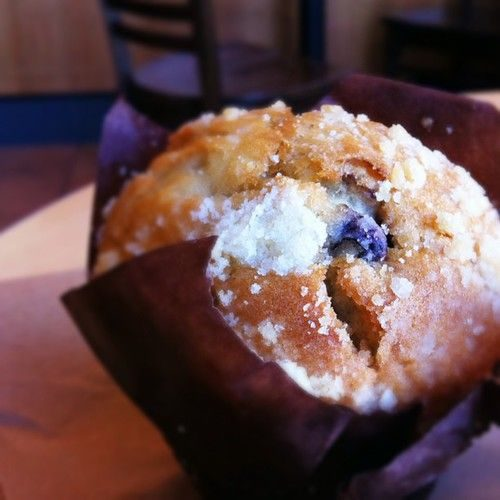

Blueberry Dream

Photo: CanadaPenguin (CC BY-SA 2.0)
A chilled layered dessert with a baked graham cracker crust, a cream cheese and whipped-topping filling, and canned blueberry pie filling, sprinkled with reserved crumbs.
Directions
- Combine cracker crumbs and butter; stir well. Set aside 2 tablespoons crumb mixture. Press remaining crumb mixture into and ungreased 12 x 8 x 2 inch baking dish. Bake at 350 degrees for 8 minutes. Cool.
- Place cream cheese in a large mixing bowl; beat at high speed of an electric mixer until fluffy. Add powdered sugar, and mix well. Set aside.
- Combine whipped topping mix, milk and vanilla in large mixing bowl. Beat at high speed of electric mixer about 4 minutes or until topping is light and fluffy. Fold whipped topping into creamed mixture.
- Spread half of whipped topping mixture over crust. Spoon pie filling over whipped topping mixture. Spread remaining whipped topping mixture over pie filling. Sprinkle reserved crumb mixture over top. Chill 8 hours. Yield: about 8-10 servings
- Combine cracker crumbs and butter; stir well. Set aside 2 tablespoons crumb mixture. Press remaining crumb mixture into and ungreased 12 x 8 x 2 inch baking dish. Bake at 350 degrees for 8 minutes. Cool.
- Place cream cheese in a large mixing bowl; beat at high speed of an electric mixer until fluffy. Add powdered sugar, and mix well. Set aside.
- Combine whipped topping mix, milk and vanilla in large mixing bowl. Beat at high speed of electric mixer about 4 minutes or until topping is light and fluffy. Fold whipped topping into creamed mixture.
- Spread half of whipped topping mixture over crust. Spoon pie filling over whipped topping mixture. Spread remaining whipped topping mixture over pie filling. Sprinkle reserved crumb mixture over top. Chill 8 hours. Yield: about 8-10 servings
Goes well with
https://lizotte.cool/recipe/blueberry-dream.html